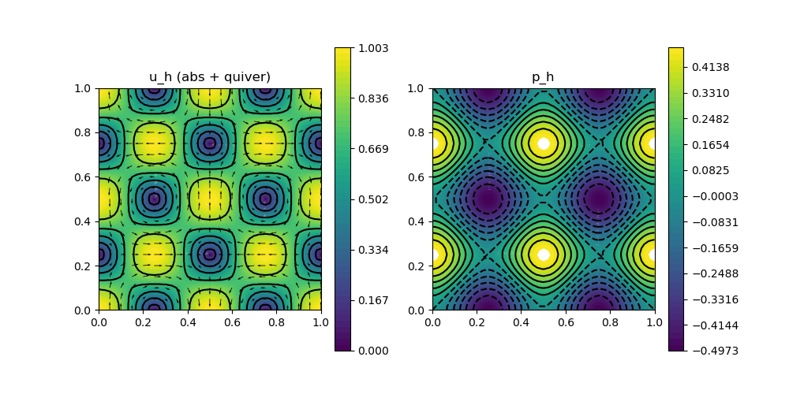

220 : Planar Lattice Flow 2D
This example computes an approximation to the planar lattice flow test problem of the Stokes equations
\[\begin{aligned} - \nu \Delta \mathbf{u} + (\mathbf{u} \cdot \nabla) \mathbf{u} + \nabla p & = \mathbf{f}\\ \mathrm{div}(\mathbf{u}) & = 0 \end{aligned}\]
with an exterior force $\mathbf{f}$ and some viscosity parameter $\nu$ and Dirichlet boundary data for $\mathbf{u}$.
Here the exact data for the planar lattice flow
\[\begin{aligned} \mathbf{u}(x,y,t) & := \exp(-8 \pi^2 \nu t) \begin{pmatrix} \sin(2 \pi x) sin(2 \pi y) \\ \cos(2 \pi x) cos(2 \pi y) \end{pmatrix}\\ p(x,y,t) & := \exp(-8 \pi^2 \nu t) ( \cos(4 \pi x) - \cos(4 \pi y)) / 4 \end{aligned}\]
is prescribed at fixed time $t = 0$ with $\mathbf{f} = - \nu \Delta \mathbf{u}$.
In this example the Navier-Stokes equations are solved with a pressure-robust variant of the Bernardi–Raugel finite element method and the nonlinear convection term (that involves reconstruction operators) is automatically differentiated for a Newton iteration.
module Example220_PlanarLatticeFlow2D
using GradientRobustMultiPhysics
using ExtendableGrids
using GridVisualize
# everything is wrapped in a main function
function main(; ν = 2e-4, nrefinements = 5, verbosity = 0, Plotter = nothing)
# set log level
set_verbosity(verbosity)
# generate a unit square mesh and refine
xgrid = uniform_refine(grid_unitsquare(Triangle2D),nrefinements)
# negotiate data
u = DataFunction((result, x, t) -> (
result[1] = exp(-8*pi*pi*ν*t)*sin(2*pi*x[1])*sin(2*pi*x[2]);
result[2] = exp(-8*pi*pi*ν*t)*cos(2*pi*x[1])*cos(2*pi*x[2]);
), [2,2]; name = "u", dependencies = "XT", bonus_quadorder = 6)
p = DataFunction((result, x, t) -> (
result[1] = exp(-8*pi*pi*ν*t)*(cos(4*pi*x[1])-cos(4*pi*x[2])) / 4
), [1,2]; name = "p", dependencies = "XT", bonus_quadorder = 4)
Δu = eval_Δ(u)
f = DataFunction((result, x, t) -> (
result .= -ν*Δu(x,t); # ∇p + (u ⋅ ∇)u = 0
), [2,2]; name = "f", dependencies = "XT", bonus_quadorder = 4)
# set finite elements (Bernardi--Raugel)
FEType = [H1BR{2}, L2P0{1}]
# prepare comparison plot
vis = GridVisualizer(; Plotter = Plotter, layout = (2,2), clear = true, resolution = (1000,1000))
for probust in [false,true]
# set identity operator
IdentityV = probust ? ReconstructionIdentity{HDIVBDM1{2}} : Identity
# setup a bestapproximation problem via a predefined prototype
Problem = PDEDescription("planar lattice flow problem")
add_unknown!(Problem; equation_name = "momentum equation", unknown_name = "velocity")
add_unknown!(Problem; equation_name = "incompressibility constraint", unknown_name = "pressure")
add_operator!(Problem, [1,1], LaplaceOperator(ν; store = true))
add_operator!(Problem, [1,2], LagrangeMultiplier(Divergence))
add_operator!(Problem, [1,1], ConvectionOperator(1, IdentityV, 2, 2; test_operator = IdentityV, newton = true))
add_constraint!(Problem, FixedIntegralMean(2,0))
add_boundarydata!(Problem, 1, [1,2,3,4], BestapproxDirichletBoundary; data = u)
add_rhsdata!(Problem, 1, LinearForm(IdentityV, f))
@show Problem
# create finite element spaces and solve
FES = [FESpace{FEType[1]}(xgrid),FESpace{FEType[2]}(xgrid)]
Solution = FEVector(FES; name = ["u_h $(probust ? "(probust)" : "classical")", "p_h $(probust ? "(probust)" : "classical")"])
solve!(Solution, Problem; show_statistics = true, show_solver_config = true)
# calculate L2 errors for u and p
L2errorV = L2ErrorIntegrator(u, Identity)
L2errorP = L2ErrorIntegrator(p, Identity)
println("|| u - u_h || = $(sqrt(evaluate(L2errorV,Solution[1])))")
println("|| p - p_h || = $(sqrt(evaluate(L2errorP,Solution[2])))")
# plot
scalarplot!(vis[1+probust,1],xgrid,view(nodevalues(Solution[1]; abs = true),1,:), levels = 5, title = "$(Solution[1].name) (abs + quiver)")
vectorplot!(vis[1+probust,1],xgrid,evaluate(PointEvaluator(Solution[1], Identity)), spacing = 0.05, clear = false)
scalarplot!(vis[1+probust,2],xgrid,view(nodevalues(Solution[2]),1,:), levels = 7, title = "$(Solution[2].name)")
end
end
endThis page was generated using Literate.jl.
Default output:
julia> Example220_PlanarLatticeFlow2D.main()
Problem =
PDE-DESCRIPTION
===============
system name = planar lattice flow problem
id | unknown name / variables [#A, #T] / equation name
[1] | velocity / ["v", "w"] / momentum equation
[2] | pressure / ["p", "q"] / incompressibility constraint
LHS block | PDEOperator(s)
[1,1] | 0.0002 (∇v,∇w) (APT = SymmetricBilinearForm, AT = ON_CELLS, regions = [0])
| ((id(v) ⋅ ∇) v, id(w)) [Newton] [∂v] (APT = NonlinearForm, AT = ON_CELLS, regions = [0])
[1,2] | -(p, div(w)) (APT = BilinearForm, AT = ON_CELLS, regions = [0], transposed copy to [2,1] with factor -1.0)
[2,1] | none
[2,2] | none
RHS block | PDEOperator(s)
[1] | (f, id(w)) (APT = LinearForm, AT = ON_CELLS, regions = [0])
[2] | none
BoundaryOperators[1] : BestapproxDirichletBoundary (bregions = [1, 2, 3, 4], data = u)
BoundaryOperators[2] :
GlobalConstraints[1] : Mean[2] != 0
┌ Info: ========== Solving planar lattice flow problem (at fixed time 0) ==========
│ Equation (1.1) momentum equation for velocity (discretised by H1BR{2}, ndofs = 10434)
└ Equation (1.2) incompressibility constraint for pressure (discretised by L2P0{1} (broken), ndofs = 4096)
SC =
SOLVER-CONFIGURATION
======================
overall nonlinear = true
overall timedependent = true
anderson_iterations = 0
subiterations = UnitRange{Int64}[1:2]
show_iteration_details = true
timedependent_equations = Any[]
anderson_unknowns = [1]
show_statistics = true
anderson_metric = l2
skip_update = [1]
linsolver = GradientRobustMultiPhysics.LinearSystem{Float64, Int64, LUFactorization}
damping = 0
time = 0
parallel_storage = false
show_solver_config = true
anderson_damping = 1
check_nonlinear_residual = true
fixed_penalty = 1.0e60
target_residual = 1.0e-10
maxiterations = 10
AssemblyTriggers =
LHS_AT[1] : A I
LHS_AT[2] : N N
RHS_AT[1] : T
RHS_AT[2] : N
(I = Once, T = EachTimeStep/SubIteration, A = Always, N = Never)
LHS_dependencies = [[1] [1, 2]; [2, 1] [2]]
ITERATION | LSRESIDUAL | NLRESIDUAL | TIME ASSEMBLY/SOLVE/TOTAL (s)
-----------------------------------------------------------------------
init | | 2.75e+01/6.40e-06/2.75e+01
1 | 4.121651e-17 | 8.045259e-02 | 7.64e-01/2.07e-01/2.86e+00
2 | 8.680445e-17 | 1.024548e-02 | 7.71e-01/2.03e-01/9.79e-01
3 | 7.695339e-17 | 4.138344e-03 | 7.29e-01/1.43e-01/8.77e-01
4 | 7.677282e-17 | 7.867024e-04 | 7.24e-01/1.41e-01/8.71e-01
5 | 7.466889e-17 | 1.935933e-05 | 7.61e-01/1.80e-01/9.46e-01
6 | 7.494593e-17 | 6.645766e-08 | 7.55e-01/1.42e-01/9.02e-01
7 | 7.499460e-17 | 3.700342e-13 | 7.15e-01/1.41e-01/8.61e-01
total | | 3.27e+01/1.16e+00/3.76e+01
┌ Info: =================================== STATISTICS ===================================
│ op position | runtime (s) | last alloc | total alloc | op name
│ ----------------------------------------------------------------------------------
│ LHS[1,1][1] | 5.0093e+00 | 1.2034e+07 | 1.2034e+07 | 0.0002 (∇v,∇w)
│ LHS[1,1][2] | 4.4784e+00 | 4.5888e+05 | 8.7759e+06 | ((id(v) ⋅ ∇) v, id(w)) [Newton] [∂v]
│ LHS[1,2][1] | 3.9132e+00 | 6.2101e+06 | 6.2101e+06 | -(p, div(w))
└ RHS[1,][1] | 8.2190e+00 | 1.3950e+08 | 1.2482e+09 | (f, id(w))
|| u - u_h || = 0.31044598969524106
|| p - p_h || = 0.19225996887573946
Problem =
PDE-DESCRIPTION
===============
system name = planar lattice flow problem
id | unknown name / variables [#A, #T] / equation name
[1] | velocity / ["v", "w"] / momentum equation
[2] | pressure / ["p", "q"] / incompressibility constraint
LHS block | PDEOperator(s)
[1,1] | 0.0002 (∇v,∇w) (APT = SymmetricBilinearForm, AT = ON_CELLS, regions = [0])
| ((R(v) ⋅ ∇) v, R(w)) [Newton] [∂v] (APT = NonlinearForm, AT = ON_CELLS, regions = [0])
[1,2] | -(p, div(w)) (APT = BilinearForm, AT = ON_CELLS, regions = [0], transposed copy to [2,1] with factor -1.0)
[2,1] | none
[2,2] | none
RHS block | PDEOperator(s)
[1] | (f, R(w)) (APT = LinearForm, AT = ON_CELLS, regions = [0])
[2] | none
BoundaryOperators[1] : BestapproxDirichletBoundary (bregions = [1, 2, 3, 4], data = u)
BoundaryOperators[2] :
GlobalConstraints[1] : Mean[2] != 0
┌ Info: ========== Solving planar lattice flow problem (at fixed time 0) ==========
│ Equation (1.1) momentum equation for velocity (discretised by H1BR{2}, ndofs = 10434)
└ Equation (1.2) incompressibility constraint for pressure (discretised by L2P0{1} (broken), ndofs = 4096)
SC =
SOLVER-CONFIGURATION
======================
overall nonlinear = true
overall timedependent = true
anderson_iterations = 0
subiterations = UnitRange{Int64}[1:2]
show_iteration_details = true
timedependent_equations = Any[]
anderson_unknowns = [1]
show_statistics = true
anderson_metric = l2
skip_update = [1]
linsolver = GradientRobustMultiPhysics.LinearSystem{Float64, Int64, LUFactorization}
damping = 0
time = 0
parallel_storage = false
show_solver_config = true
anderson_damping = 1
check_nonlinear_residual = true
fixed_penalty = 1.0e60
target_residual = 1.0e-10
maxiterations = 10
AssemblyTriggers =
LHS_AT[1] : A I
LHS_AT[2] : N N
RHS_AT[1] : T
RHS_AT[2] : N
(I = Once, T = EachTimeStep/SubIteration, A = Always, N = Never)
LHS_dependencies = [[1] [1, 2]; [2, 1] [2]]
ITERATION | LSRESIDUAL | NLRESIDUAL | TIME ASSEMBLY/SOLVE/TOTAL (s)
-----------------------------------------------------------------------
init | | 2.13e+00/4.90e-06/2.13e+00
1 | 4.228977e-17 | 9.171721e-02 | 7.85e-01/1.96e-01/9.86e-01
2 | 1.051718e-16 | 1.199596e-05 | 7.56e-01/2.18e-01/9.78e-01
3 | 1.040599e-16 | 6.220656e-08 | 7.59e-01/1.91e-01/9.55e-01
4 | 1.047924e-16 | 2.059037e-14 | 7.39e-01/1.89e-01/9.32e-01
total | | 5.17e+00/7.93e-01/5.99e+00
┌ Info: =================================== STATISTICS ===================================
│ op position | runtime (s) | last alloc | total alloc | op name
│ ----------------------------------------------------------------------------------
│ LHS[1,1][1] | 1.0197e-01 | 7.1589e+06 | 7.1589e+06 | 0.0002 (∇v,∇w)
│ LHS[1,1][2] | 1.3179e+00 | 5.1624e+05 | 6.4024e+06 | ((R(v) ⋅ ∇) v, R(w)) [Newton] [∂v]
│ LHS[1,2][1] | 2.7363e-02 | 2.0148e+06 | 2.0148e+06 | -(p, div(w))
└ RHS[1,][1] | 3.7077e+00 | 1.3956e+08 | 7.0717e+08 | (f, R(w))
|| u - u_h || = 0.0062843340681256925
|| p - p_h || = 0.016720063839268287